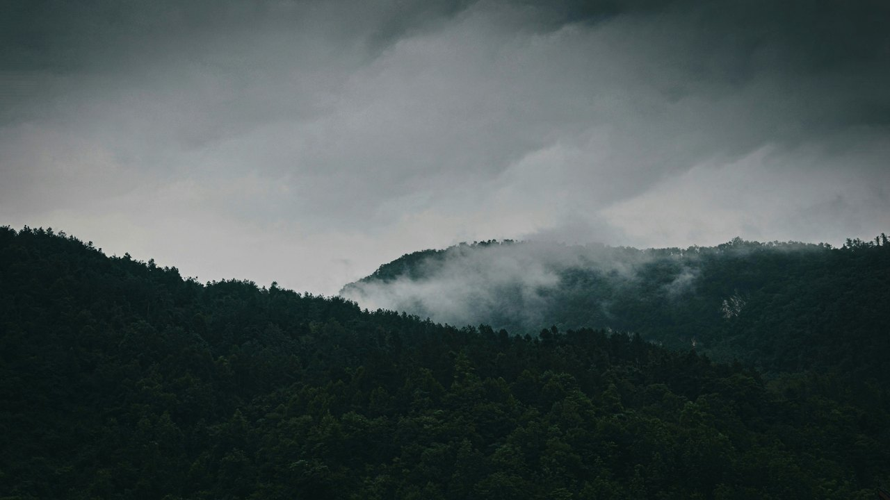
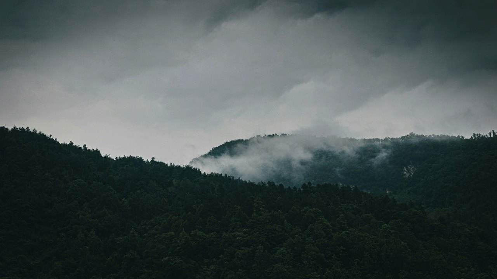
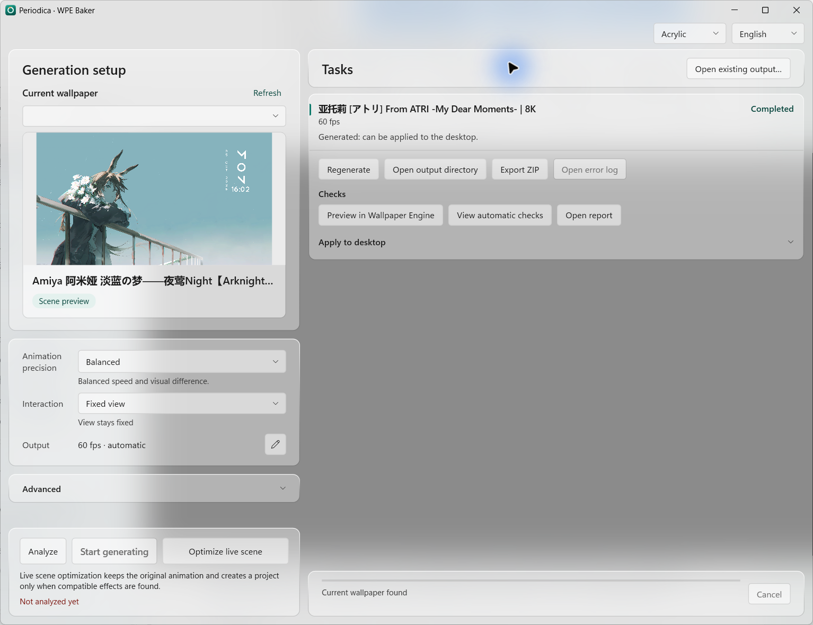
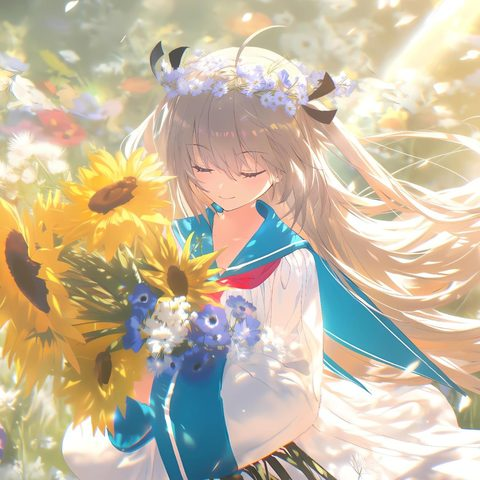
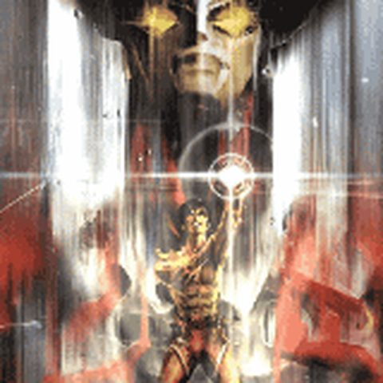

Periodica analyzes the motion in Wallpaper Engine scenes, brings repeating animations into a seamless loop, and renders that loop as video. Your wallpaper keeps moving, with clocks, music response and other live content alongside it. The GPU does less of the same work, over and over. Its first application is WPE Baker.
Frame-comparison tools look for repetitions in the images; Periodica analyzes the mathematical relationships behind the animation, coordinating shader time, animation tracks, particle cycles and video timebases to solve loops for the content it can bake. Independent video groups can use their own periods without waiting for the entire scene to return to its starting state. Drag the divider to compare the first and last frames of the loop above.


frame 1frame 3,000A wave repeats every 7.3 s, a sway every 11.1 s, a particle cycle every 4.6 s and a video every 20 s. They may take too long to return to their starting states together for a practical video loop. Periodica solves each component’s period, then adjusts its playback speed within the selected budget so animations that need to play together form a seamless loop.
The three precision presets set a visible-change budget: Efficiency allows up to 5%, Balanced up to 3%, and Quality finds the smallest change that still closes the loop. The program favors smaller adjustments and reports the periods and speed changes it actually uses.
Each component has its own adjustment limit. For very slow motion, the program also considers displacement and changes in speed when checking whether a loop can close. Content that cannot meet the conditions stays live, with the layer and reason listed in the report.
During generation, the program renders extra frames around the loop point, checks the encoded seam and compares the assembled result of baked content and live layers. Outputs are accepted once the corresponding checks pass.
2.0 brings a new liquid glass interface, with wallpaper selection, generation settings and the task queue in one window. Start with your current wallpaper or drop in a scene, choose how it should look and play, then preview, apply or export the result.
The app reads the wallpaper currently selected in Wallpaper Engine. You can also drop in a wallpaper folder or scene file to begin analysis.
The analysis shows what can be generated and what stays live. Adjust animation precision, interaction, frame rate and resolution on the left, alongside the wallpaper’s own configurable properties.
The queue on the right shows progress and check results. Once a job finishes, preview it in Wallpaper Engine, apply it to a selected screen, export a ZIP, or restore the previous wallpaper.

Measurements use an Intel Arc B390 laptop and the official Wallpaper Engine player, alternating the original scene and baked output in A/B/B/A order. Outputs use 1920×1080 at 60 fps, Balanced precision and default wallpaper properties; originals render normally on the 3072×1920 screen. iGPU and CPU-package power are recorded separately.


| Wallpaper | Original iGPU | Baked iGPU | Change | CPU package: original → baked |
|---|---|---|---|---|
| Nijika (Bocchi the Rock!)3650475846 | 20.87 W | 14.63 W | −29.9% | 31.80 → 26.51 W |
| Alone (day/night scene)3448877775 | 5.52 W | 4.81 W | −12.8% | 15.45 → 16.17 W |
| Atri — My Dear Moments3669681034 | 8.51 W | 0.27 W | −96.8% | 17.85 → 9.26 W |
| Ultraman Leo3685247684 | 9.08 W | 1.44 W | −84.1% | 19.58 → 11.58 W |
| Yuri3572877776 | 2.10 W | 0.48 W | −77.4% | 11.59 → 9.45 W |
| Frieren — Pagoda of flowers3426865175 | 10.57 W | 7.23 W | −31.6% | 19.62 → 19.64 W |
| Lost Landscape 33713073223 | 8.10 W | 3.30 W | −59.2% | 17.96 → 13.61 W |
| Ayanami Rei3258032485 | 2.16 W | 0.14 W | −93.4% | 11.23 → 8.72 W |
As playback frame rate rises, the original scene has to render more images in real time. Baking periodic animation into video lets the video decoder handle that part of playback, reducing repeated work on the 3D engine. Retained clocks, audio response and other live content continue to run as before.
This project began on a laptop with an iGPU.
| Wallpaper / frame rate | Original iGPU | Baked iGPU | Change | CPU package: original → baked |
|---|---|---|---|---|
| Atri · 60 fps | 8.50 W | 0.30 W | −96.5% | 16.53 → 9.33 W |
| Atri · 165 fps | 25.55 W | 2.19 W | −91.4% | 37.67 → 12.84 W |
| Ayanami Rei · 120 fps | 8.75 W | 1.97 W | −77.5% | 18.62 → 13.72 W |
Interaction offers three modes: Keep, Fixed view and Off. Fixed view is the default.
Keep preserves mouse and audio response. Clocks, dates and media text update live in every mode.
A Wallpaper Engine scene can contain hundreds of shader variants, particle systems, script controllers and video layers. Finding two similar frames is not enough to bake them into a loop: the program needs to know how animation changes over time, and which parts must keep responding to live input.
2.0 replaces the old library of period equations with shader time analysis. It applies abstract interpretation to the compiled SPIR-V, following time through the data flow to derive cycles, continuous drift and animation that settles after a while. New effects no longer need a hand-written equation of their own; unfamiliar custom shaders can be analyzed too.
Once the periods are known, the program looks for parameters it can adjust locally. Waves, glows and scrolling within one effect no longer have to speed up together. Motions that can be adjusted independently are coordinated separately, and independent video groups repeat at their own intervals.
Author scripts are also included in time analysis. Constants, periodic changes and opening animations can be identified; where state carried between frames can be simulated exactly, the program searches for that state to recur. Content that depends on the mouse, audio or the clock stays live.
To put the baked result back into the original scene, Periodica also handles transparency, blending order and HDR intermediate images. Brightness outside ordinary video range is mapped into the video and restored by a generated shader, so cached content can continue through the author’s existing effect chain.
Building on open-wallpaper-engine, Periodica reworks scene execution and the Vulkan offline rendering pipeline. Shaders, scripts, particles and video advance in deterministic time steps, with simulation, drawing and sampling scheduled separately. Warm-up no longer reads back images that will be discarded, loop-start searches draw only the frames needed for comparison, and independent video groups are generated at their own periods.
In the previous baking pipeline, transparent frames passed through full-frame readback, CPU scanning, lossless intermediate video and a second encoding pass. Version 2.0 moves cropping, transparency processing and loop crossfades into the GPU pipeline, then feeds the result directly to the hardware encoder. Fewer data transfers, intermediate files and repeated computations make the entire generation process faster.
In a same-scene comparison on an RTX 5090 D v2, full 4K baking time fell from about 15 minutes to 36 seconds, a roughly 25-fold speedup. A separate long-scene 4K test reached 3.5 times real-time speed from analysis through generation, producing 10 minutes of 4K 60 FPS animation in about 3 minutes.
In preparation for the 2.0 release, we refined compatibility and generation performance through regression testing on 489 real Workshop wallpapers and 4K rendering and video export tests across 12 scenes of different types.
On the same set, scenes eligible for baking increased from 244 in version 1.0.2 to 440, reaching 90.0% coverage. Coverage among the 41 popular wallpapers in the test set rose from 22 to 37.
Results from five open-source renderers serve as performance references. In the 4K scene tests on an RTX 5090 D v2, Periodica averages 1.37–3.12× the reference rendering speeds, with video export averaging 2.74× real time.
| Regression coverage | 1.0.2 | 2.0 |
|---|---|---|
| Baking coverage | 244 / 489 | 440 / 489 |
| Coverage | 49.9% | 90.0% |
| Popular wallpapers | 22 / 41 | 37 / 41 |
| Wallpaper | Rendering / FPS | Periodica Video exportsec · × real time | |||||
|---|---|---|---|---|---|---|---|
| Periodica | WebWallGL | Almamu | Portghost | Mac renderer | AnisPaper | ||
| Kirby | 246.5 | 196.7 | 121.6 | Timed out | 151.2 | 89.5 | 3.502.86× |
| Atri | 312.3 | 241.6 | 166.2 | 92.6 | 162.0 | 98.6 | 3.582.79× |
| Rei | 342.7 | 238.7 | 199.6 | 139.4 | 207.9 | 95.4 | 3.313.03× |
| Nijika | 229.7 | 172.4 | 157.2 | Timed out | 150.0 | 87.6 | 3.333.00× |
| Frieren | 245.7 | 195.0 | 164.7 | 142.5 | 169.9 | 92.0 | 3.223.11× |
| Alone | 206.5 | 172.5 | 153.7 | Timed out | 152.5 | 71.9 | 3.562.81× |
| Lost Landscape 3 | 244.1 | 183.7 | 159.3 | Timed out | 162.9 | 89.0 | 3.283.05× |
| Saturn | 138.3 | 202.1 | N/A | Timed out | N/A | N/A | 11.441.75× |
| Solar System | 119.8 | 120.1 | N/A | Timed out | N/A | N/A | 10.371.93× |
| Dresden | 299.8 | 210.4 | 179.2 | 185.1 | 185.6 | 94.1 | 3.153.18× |
| DELTARUNE Door | 343.1 | 203.1 | Timed out | Timed out | Timed out | Timed out | 4.322.31× |
| Night City | 239.5 | 193.7 | N/A | Timed out | N/A | 87.6 | 3.243.09× |
| Periodica mean speed ratio | — | 1.37× | 1.68× | 2.38× | 1.67× | 3.12× | 2.74×real time |
Bake repeating scene animation into video and place it back alongside retained live content. Wallpaper Engine is Periodica’s first application area.
Replace individually maintained period equations with shader and script time analysis, expanding the range of animation that can be baked. Give independent video groups their own loops, improve HDR intermediate-image handling, and reduce readbacks, repeated encoding and waits during generation.
Use caching, reuse, precomputation and deterministic replay to bring more real-time layers within practical baking range, including a new AI-accelerated generation pipeline.
Use history and motion information to reconstruct frames, reducing the work of rendering each frame from scratch, and explore cooperation between the GPU and NPU.
Run your favorite animated wallpaper with lower power use.
Scenes with demanding, repeating animation have the most to gain. The examples above used 13–97% less iGPU power after baking. Lightweight scenes have less work to save; scenes with extensive interaction keep their live content alongside the baked animation.
Choose Efficiency, Balanced or Quality to set the visible-change budget. The report lists every retimed component and its exact adjustment percentage. Each seam is checked against the original scene's motion before the output is accepted.
Windows, Wallpaper Engine, and a GPU for the offline render. The portable build has no installer and no Python. Baking a typical scene takes minutes; the video decoder handles baked content while retained live layers continue rendering.
Yes. Tooling under MIT, the renderer under GPL v2; full source, third-party notices and build records are in the repository.